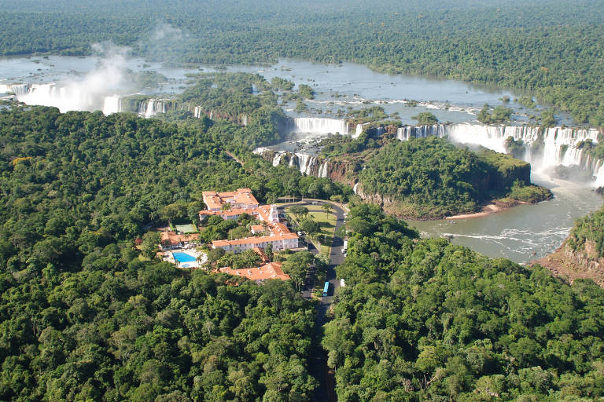
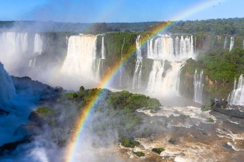
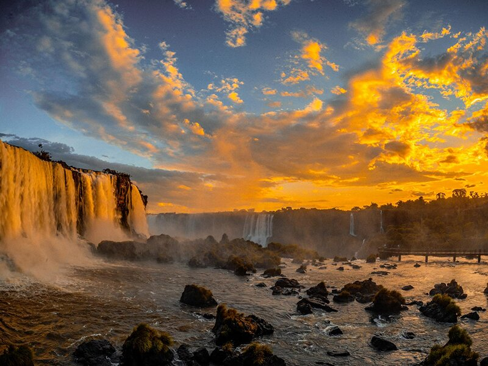

Uma das 7 Maravilhas Naturais do Mundo
Foz do Iguaçu — Paraná, Brasil
ExplorarAs Cataratas do Iguaçu são um conjunto de cerca de 275 quedas-d'água localizadas no Rio Iguaçu, na fronteira entre Brasil e Argentina. Suas águas caem de até 80 metros de altura, formando um espetáculo natural de beleza incomparável. Foram eleitas uma das 7 Maravilhas Naturais do Mundo em 2011.
A queda mais famosa é a Garganta do Diabo, com aproximadamente 80 metros de altura. O Parque Nacional do Iguaçu é Patrimônio Mundial da UNESCO desde 1986 e atrai mais de um milhão de visitantes por ano.
Clique em qualquer foto para ampliar e navegar.



Ouça o barulho da água caindo — uma experiência imersiva: